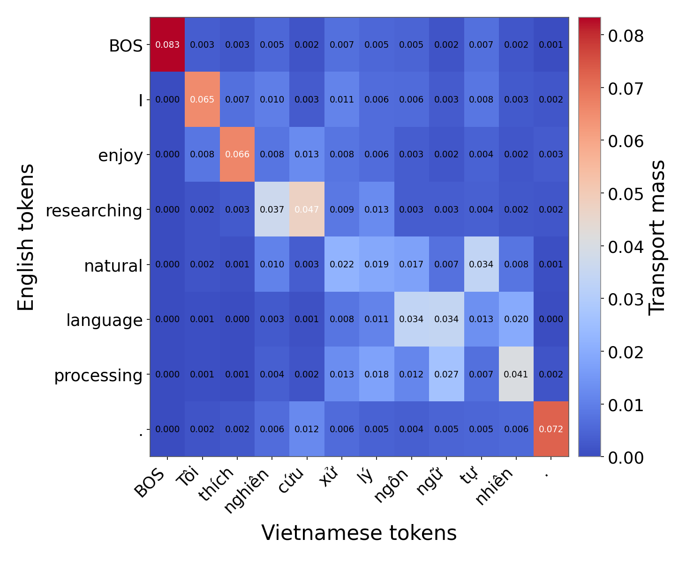

I don't usually write posts to mark milestones, but this one gets an exception. EMNLP is one of the biggest, most competitive venues in NLP — this cycle pulled in roughly 17,000 submissions, and only about 15.4% made it into the main conference. My paper is somehow one of them, and I've re-read the acceptance email more times than I'd like to admit, just to make sure it wasn't an elaborate prank.
So what's the paper actually about? Picture a large language model as a brilliant, slightly obsessive polyglot who secretly thinks in English no matter what language you address it in. Feed it Vietnamese, and somewhere in its middle layers it quietly translates your sentence into English, does its thinking there, and only switches back to Vietnamese right before it opens its mouth. English isn't just the language the model happens to be best at — it's the language the model thinks in.

Naturally, people have tried to fix the model's obvious language favoritism — usually with "contrastive learning": grab the English representation and the Vietnamese (or Arabic, or Swahili) one, and pull them toward each other until they're close enough to call it aligned. It works, sort of, except English gets pulled too. Imagine fifteen people holding a rope in a circle; if everyone yanks toward the middle at once, even the strongest player in the group drifts off their spot. That's exactly what happens to English — the very anchor every other language depends on quietly gets a little worse.
Our fix, in one sentence: stop pulling both sides, and build a one-way bridge instead. We use Optimal Transport — specifically Sinkhorn iterations, a decades-old trick for cheaply matching two distributions — to move non-English representations toward English, while nailing English in place with a "consistency" penalty so it can't drift, even though it shares the same underlying weights. English becomes a lighthouse rather than a fellow rope-puller: everyone else moves toward it, and it never moves an inch.

We only build this bridge at the transformer's middle layers, because that's where meaning actually lives — after the model has processed raw tokens, but before it commits to English-flavored output patterns. Early layers are too busy with surface form: spelling, script, tokenization quirks. Late layers have already half-decided to write the answer in English. The middle is the sweet spot, and the model agrees with us: without being told where to look, it independently spends over half its "alignment budget" on just three layers, right in that range.
Here's the fun part. Feed the model a sentence like "The cat sat on the mat" alongside its Vietnamese translation, and watch what the transport plan discovers on its own, with zero explicit word-alignment supervision: cat maps to mèo, mat maps to thảm, sat maps to ngồi — it even figures out that Vietnamese sometimes needs two syllables to say what English says in one. It's oddly satisfying watching a matrix rediscover translation from scratch.

Across sentence classification, extractive question answering, and knowledge-recall benchmarks in over a dozen languages, this asymmetric approach consistently beats the contrastive baseline on cross-lingual transfer — and, crucially, it never costs a single point of English performance. Sometimes it even nudges English up slightly, which was a very pleasant surprise the first time I saw the numbers.
None of this happens alone. Enormous thanks to Prof. Tho T. Quan and Dr. Duc Anh Le for steering this from a half-formed idea into a full paper, and to everyone who patiently sat through me explaining Sinkhorn iterations over dinner. I'm looking forward to presenting this in person in Hungary and meeting the community there — first EMNLP, and hopefully not the last.